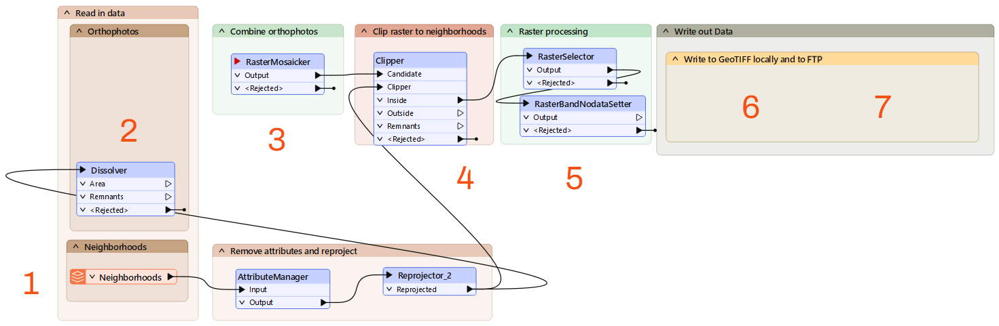
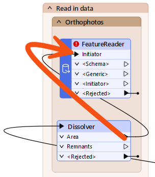
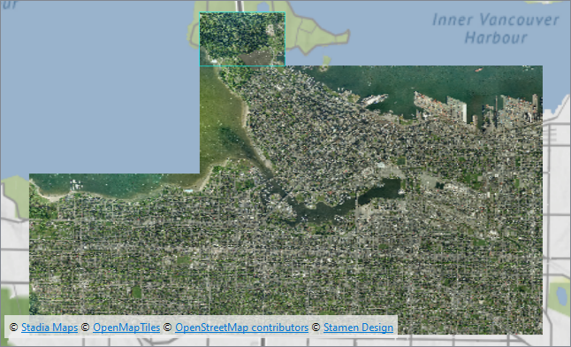
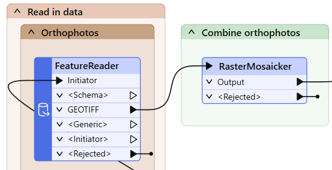
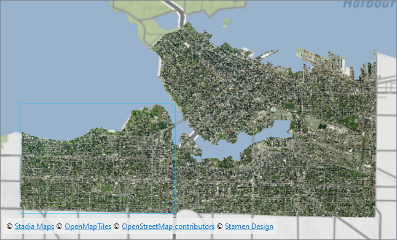
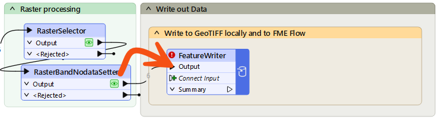
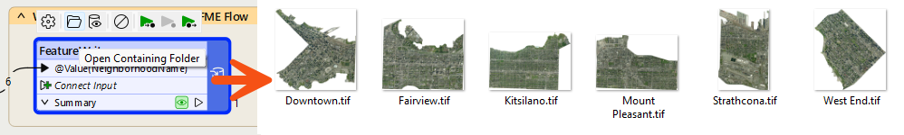
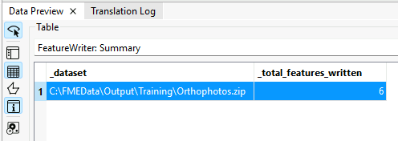
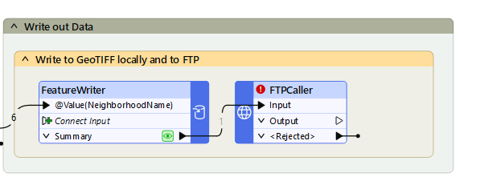
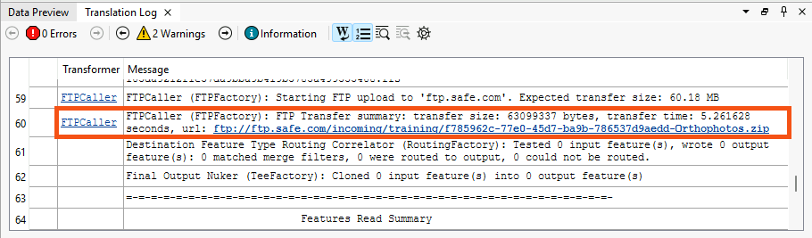

Learning Objectives
After completing this lesson, you’ll be able to:
- Add and configure a FeatureReader.
- Use a FeatureReader with multiple initiator features.
- Add and configure a FeatureWriter.
- Use a Connector transformer.
Instructions
In this lesson, you will:
- Optional: Watch the Exercise: Use the FeatureReader and FeatureWriter video.
- Scroll down to read the text below.
- Optional: Let us know if you found this lesson relevant to your role by filling out the survey at the bottom of the page.
- Click 'Next' to mark the lesson complete.
Resources
- VancouverNeighborhoods.kml
- C:\FMEData\Data\Boundaries\VancouverNeighborhoods.kml on Safe Software training machines
- Orthophotos.zip
- C:\FMEData\Data\Orthophotos\*.tif
- Note: you can read files from the URL if you don't have FMEData installed on your C:\ drive, but performance will be very poor. The example workspace uses local paths.
- Starting workspace
- C:\FMEData\Workspaces\AdvancedReadingAndWriting\read-and-write-your-data-mid-workflow.fmw
- Complete workspace
- C:\FMEData\Workspaces\AdvancedReadingAndWriting\read-and-write-your-data-mid-workflow-complete.fmw
Exercise

Jennifer manages a collection of orthophotos for the city of Vancouver. Her workspace reads GeoTIFF orthophotos from a local folder, clips them to downtown neighborhood boundaries, and writes the results as individual raster files. She needs to configure a FeatureReader to read only the photos that overlap the neighborhoods, and a FeatureWriter so the workspace can continue processing after writing, uploading the files to an FTP server.
In this exercise, you will:
- Configure a FeatureReader with a spatial filter to read only the GeoTIFF files that intersect the neighborhood boundaries.
- Configure a FeatureWriter to write individual raster files per neighborhood.
- Use an FTPCaller to upload the written files to a web storage location.
1) Start Workbench
- Start FME Workbench (2026.1 or later).
- Open your starting workspace: C:\FMEData\Workspaces\AdvancedReadingAndWriting\read-and-write-your-data-mid-workflow.fmw
2) Explore the Workspace
The workspace already reads a KML dataset of Vancouver neighborhoods, removes some attributes, and reprojects them. You will add the FeatureReader and FeatureWriter to complete it. If you examine the workspace, you'll see the following:

- It reads a vector dataset of the neighborhoods in KML format, removes some attributes, and reprojects them.
- We will add the FeatureReader to read the photos based on the areas of the neighborhoods.
- It will mosaic the rasters into one image using the RasterMosaicker.
- Then, it will clip the neighborhood features out to create individual raster features using the Clipper.
- Then, it will process the rasters to set a NoData band so the areas outside the photo are transparent.
- Then, we must configure a FeatureWriter to write out the individual raster files.
- Then, we can use a Connector transformer to upload the files to a web storage location.
3) Add a FeatureReader
Use a Dissolver to combine all neighborhood features into a single geometry, then use that as a single initiator feature for the FeatureReader. This ensures each orthophoto is read only once, even if it intersects multiple neighborhoods.
- In the Orthophotos bookmark, above the Dissolver, add a FeatureReader.
- On the Dissolver, connect the Area output port to the FeatureReader's Initiator port.
- The Dissolver combines all neighborhood features into a single geometry. This ensures each photo is read only once, even if it intersects multiple neighborhoods.

- Configure the FeatureReader as follows:
| Format |
GeoTIFF (Geo-referenced Tagged Image File Format) |
| Dataset |
Local files (preferred): click the ellipsis [...] button > C:\FMEData\Data\Orthophotos > Select all the files > Click Open.
You should see all the files listed, separated by commas. This list instructs the FeatureReader to read all these files.
Web backup only: https://s3.amazonaws.com/FMEData/FMEData/Data/Orthophotos.zip
|
| Spatial Filter |
Initiator OGC-Intersects Result |
- Right-click the FeatureReader and select Run > Run to This.
- Inspect the GEOTIFF output port and view the matching orthophotos.

Map tiles © Stadia Maps, © OpenMapTiles, © OpenStreetMap contributors, © Stamen Design
4) Disconnect the Dissolver
For your workspace, you want to read each photo intersecting any neighborhood just once, which is why you used a Dissolver to get a single initiator feature. However, you can also use the FeatureReader in scenarios with multiple initiators. If you skip the Dissolver, you will read some photos multiple times, once for each neighborhood they intersect. Try it out to see the difference.
- Disconnect the Dissolver from the FeatureReader.
- Connect the Reprojector_2 output port to the FeatureReader Initiator port.
- Right-click the FeatureReader and select Run > Run to This.
- Inspect the GEOTIFF output port and take note of how many features appear.
- You'll need this number for the quiz.
- Reconnect the Dissolver to the FeatureReader before continuing to the next step.
5) Run the Workspace
Now that the FeatureReader is configured, connect it to the rest of the workspace and run it to verify your results. You should see the orthophotos clipped to the neighborhood outlines, with transparent pixels in areas outside the neighborhood boundaries.
- On the FeatureReader, connect the GEOTIFF output port to the RasterMosaicker input port.

- Run your workspace.
- On the RasterBandNoDataSetter, inspect the Output port.
- Raster images can take several seconds to appear in Data Preview.

Map tiles © Stadia Maps, © OpenMapTiles, © OpenStreetMap contributors, © Stamen Design
6) Add a FeatureWriter
Now that the orthophotos have been clipped to the neighborhood boundaries, you will write them out as individual GeoTIFF files, one per neighborhood. Use a FeatureWriter instead of a standard writer. This allows your workspace to continue processing after the data has been written.
- In the Write to GeoTIFF locally and to FME Flow bookmark, add a FeatureWriter.
- On the RasterBandNoDataSetter, connect the Output port to the FeatureWriter's Connect Input port.
- The Connect Input port converts into an input port named after the connected port.

- Configure the FeatureWriter as follows:
| Format |
GeoTIFF (Geo-referenced Tagged Image File Format) |
| Dataset |
C:\FMEData\Output\Training\Orthophotos.zip |
| Feature Types > General > Raster File Name |
Click the drop-down, then select Attribute Value > NeighborhoodName |
- Click OK to close the FeatureWriter parameters dialog.
- Run your workspace.
- Click the FeatureWriter once to select it, then click Open Containing Folder and inspect the output.
- You should see a separate .tif file for each neighborhood inside the ZIP.

Now that the FeatureWriter has written the files locally, you will use an FTPCaller to upload them to an FTP server. The FeatureWriter creates a _dataset attribute containing the path to the written file, which you will use to tell the FTPCaller where to find it.
Alternatively, you can try using a different Connector transformer with a web service you have access to, like a GoogleDriveConnector or DropboxConnector.
- On the FeatureWriter, inspect the Summary cache.
- You should see a _dataset attribute storing the path to the written data.
- You will use this path to upload the files to an FTP server.

- After the FeatureWriter, add an FTPCaller.
- On the FeatureWriter, connect the Summary port to the FTPCaller Input port.

- Configure the FTPCaller it as follows:
| URL |
ftp://ftp.safe.com/incoming/training/@UUID()-Orthophotos.zip |
| Transfer Type |
Upload from a File |
| File to Upload |
_dataset |
| Authentication Type |
None/Anonymous |
- Run your workspace.
- In the log file, you will find the confirmation that FME uploaded the dataset to the FTP Server:
